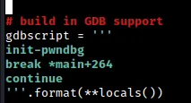

IrisCTF 2023 - babyseek Write-up
Preliminary Analysis
Greetings everyone. I recently had the opportunity to participate in IrisCTF 2023 and was able to complete a total of 7 challenges. One of these challenges was called “babyseek,” and the prompt for it read as follows:

According to the prompt for the “babyseek” challenge, we are able to “seek around” a specific file. However, when we try to access this file, it allegedly leads to nowhere since we are at /dev/null. To complete the challenge, we were provided with both a remote endpoint and a zip file to work with. Upon unzipping the zip file, we discovered the following:
The “babyseek” challenge provided us with a binary file called “chal” as well as its accompanying source code. A Dockerfile was also included, which allowed us to test any exploits we developed. While working on this challenge, I found that I didn’t actually need to use the Dockerfile. However, it did come in handy later on when I was working on the “ret2libm” challenge, which I plan to write about in a separate post.
Now, let’s take a closer look at the source code itself.

According to the source code, this program first prints out the memory address of the win function. It then prompts the user for an integer input, which is used as a positional offset from the start of the /dev/null file. The program also prints out the current position of the null character. After that, it uses the fwrite function to write the value of the super_special pointer (which points to the address of the win function) to the /dev/null stream at the specified position.
We run the binary and the output is as expected.

On running checksec on the binary, we see that NX and PIE is enabled. There’s no RELRO either, so that means we can overwrite GOT entries very easily.
My Approach
To exploit this, I decided to input an offset that would overwrite the call to the exit function in the main function with the address of the win function. This would cause the program to execute the win function and print the contents of the /flag file when it finishes running, instead of exiting as intended.
To do this, we were given the addresses of both the win and null functions at their respective starting file offsets. Our goal was to use these addresses to somehow reach the address of the exit function.
To assist with this process, I used the pwntools library to attach gdb-pwndbg to a process running the chal binary. I will explain in more detail how I did this after I describe the steps I took to locate the address of the exit function.

As demonstrated in the attached screenshot, by using the flag GDB, it is possible to launch a debugging session with pwndbg that breaks at the scanf function (I will provide instructions on how to do this later).
For now, let’s turn our attention to the new terminal window that has been opened with GDB.

If you take a close look at the value stored in the RDX register (I stepped 3 instructions after the scanf function), you will notice that it represents our current position in the file stream of the null function. It’s important to keep this in mind as we continue.
By running the got command in pwndbg, it is possible to view all of the libc functions along with their corresponding addresses. The addresses that are colored white are of particular interest to us, as they are located in the got.plt section of the binary.
One way I attempted to reach the address of the exit function was to simply subtract its address from the value stored in the RDX register (which holds the address of the current file pointer). This would give me the offset to subtract from the current file pointer in order to reach the desired address. In other words:
curr + (curr-exit())
I initially tried hardcoding this offset, but it turns out that it changes with every run of the program.

As you can see, the distance between the current file pointer and the win function also changes with every runtime of the program.
However, this occurrence gave me an idea. If we subtract the address of the current file pointer from the address of the win function, we can calculate an offset that leads us from the null function to the win function.
As demonstrated above, by calculating the offset that leads us to the win function, we are able to reach it consistently in both runs of the program. And when we subtract the address of the win function from the address of the exit function in the GOT section, the resulting offset remains unchanged (8767 in this case).
Based on this information, we can construct a formula that will always allow us to reach the exit function. It is as follows:
exit = curr + [(win-curr)+8767] (or 0x223f)
The input we provide to the program will simply be [(win-curr)+8767] (or 0x223f), and this will allow us to overwrite the address of the exit function with the address of the win function.
With that said, let’s move on to constructing our pwntools script. I will also explain how I dealt with the Proof of Work (PoW) solver within the same script.
Step-by-Step Construction
This script is able to run the “chal” binary locally, with GDB enabled, and it is also able to execute the exploit remotely. However, the PoW solver isn’t required when running the program locally, so I had to create a separate Python file that excludes that code in order to test the exploit more efficiently.

In this section of the script, we import several basic libraries. The most important of these is pwn. If you are using a different terminal emulator (such as alacrity or terminator), you may also need to include the pwn.context.terminal line to ensure compatibility. Since terminator runs using Python 3, I had to hardcode this value. For more information, you can refer to the pwn library documentation.
We also define the start function, which is capable of taking various arguments such as GDB and REMOTE. When called without any arguments, the start function launches a local process. In this function, the gdbscript variable needs to be formatted in a specific way, as we will see below.

As you can see in the code snippet above, the gdbscript variable should be defined in this specific format in order to use the desired script. In this case, the init-pwndbg command enables the use of the pwndbg debugger instead of the default gdb debugger. This command was made possible through an installation of the necessary tools from this GitHub repository.

In this section of the script, we set the log level to debug, which is the highest possible level. This provides us with a significant amount of output on the terminal that can be helpful in identifying and troubleshooting issues with I/O. If you prefer to turn off this level of logging, you can use the “critical” log level instead.
The next line sets the current context’s binary to the chal file using the pwn.ELF function and saves the resulting ELF object into the elf variable. This can be useful in a variety of situations. For example, if the binary had PIE disabled, we could use the convenient functions provided by pwntools to directly retrieve the addresses of functions and linked libraries. However, in this case, the binary has PIE enabled, so this approach is not possible.
This code snippet automates the PoW solving here. We receive 3 lines of input using io.recvline().
We get a solver prompt in the next line that we need to execute. See below -
We make a script called solver.sh that runs solversc.sh.

The solver.sh script saves the output of solversc.sh into the solved file. In the pwntools script, we open this file and use the io.sendline() function to send the solution to the “Solution?” prompt.
After sending the solution, we receive output indicating whether the input is correct or not. To handle this output, we use another io.recvline() function. Once this step is complete, the actual program begins.

If you recall, when we ran the chal binary locally, the first two lines of output contained the addresses of the win function and the current file pointer.
To retrieve this information in the pwntools script, we use the io.recvline() function to receive the output from the program. We then decode the binary output using the decode() function and split the resulting string into separate pieces using the split() function. To obtain the exact address we need, we select the last element of the split string using the index [-1].
We repeat these steps to obtain both the address of the win function and the address of the current file pointer.
Once we have these values, we use the formula we constructed earlier to calculate the address we need to seek to in order to overwrite the exit function with the win function. We then use io.recvline() to receive the flag (since the win() function runs cat /flag).
Finally, we use the io.interactive() function to establish an interactive session with remote input/output (this function is particularly useful if we had run the /bin/sh command).
To use this script, we save it as a Python file and run it to obtain the flag, as shown in the example below.

That’s all for this writeup. I might release another writeup for the ret2libm challenge as well and others that I completed.
Thank you for reading :)))